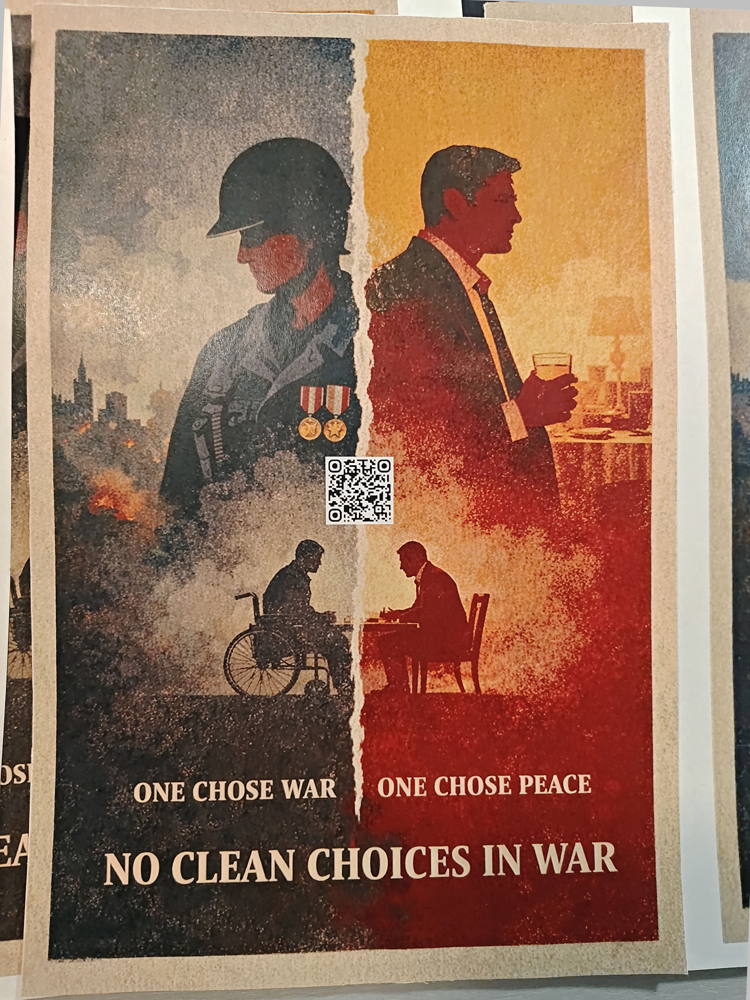
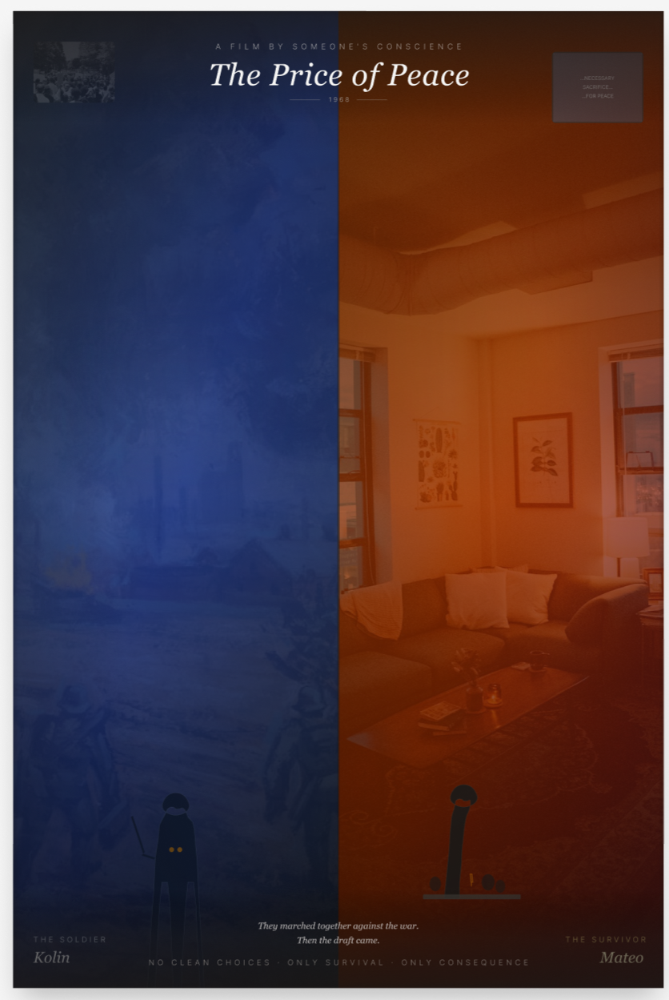
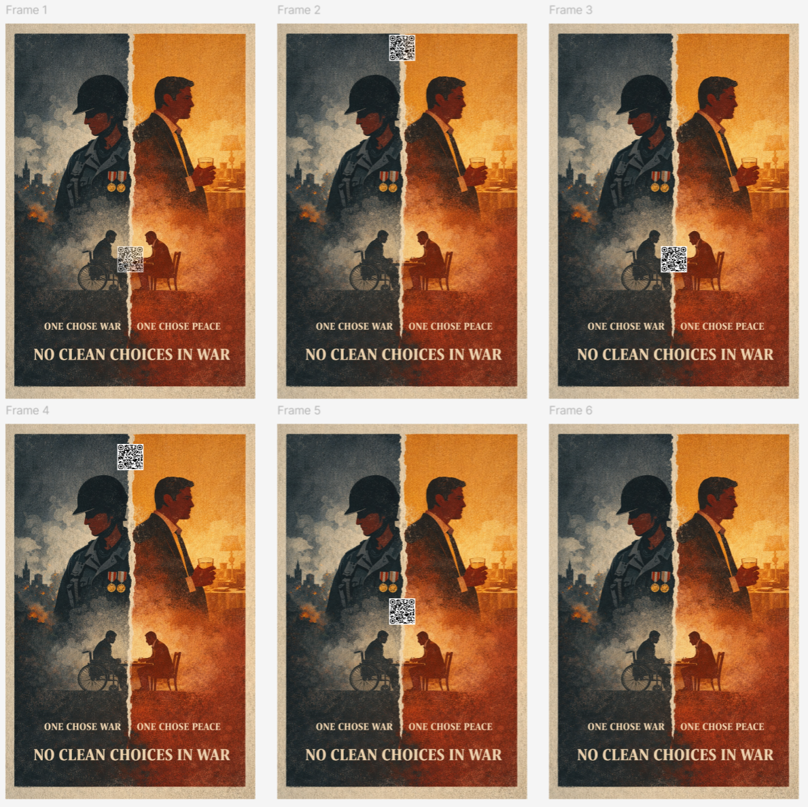
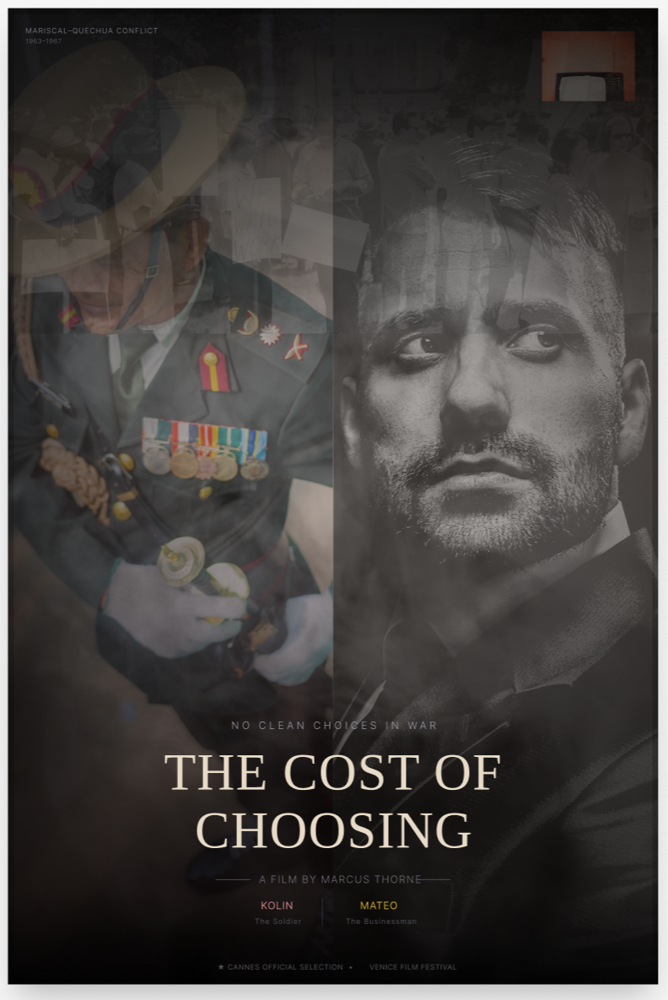
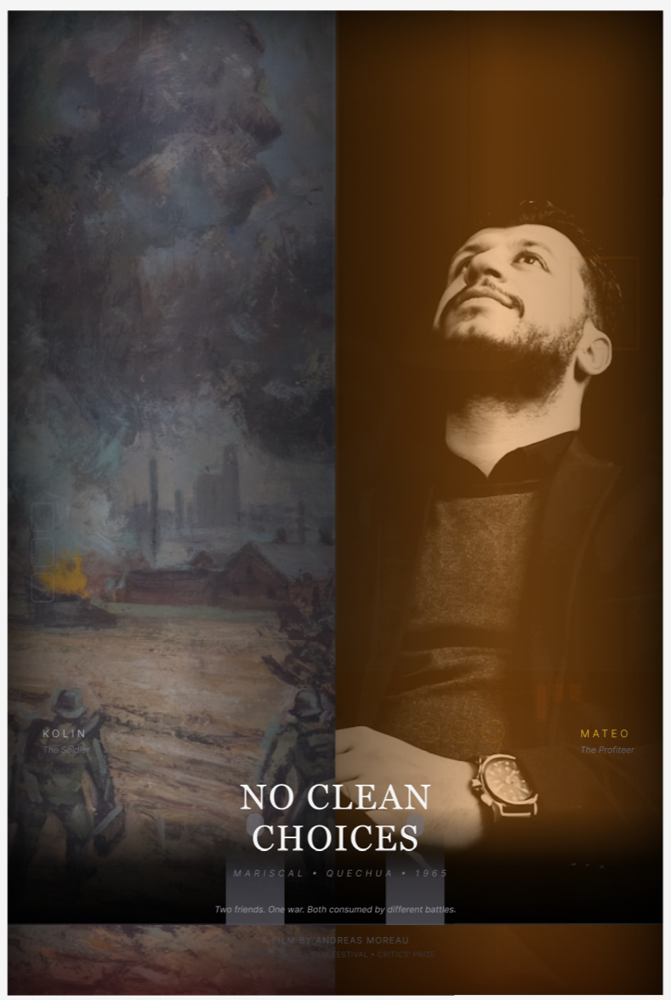

Physical Artifact 1
Poster – Louisa
A physical poster that introduces the central conflict, establishes tone, and guides the audience into the narrative through visual contrast, hierarchy, and interaction.

01
Overview
The poster serves as the audience introduction in the narrative, introducing the conflict and establishing the tone of the project. Visually, it communicates the contrast between war and peace and allows users to quickly understand the central tension before engaging with the rest of the experience.
The artifact reflects how conflict is framed through visual media and guides the user’s interpretation through composition, colour, and hierarchy.
02
Intent
The goal of this poster was to clearly communicate the contrast between two perspectives in the narrative in a way that is immediately readable. So, rather than just creating a visually complex composition, the focus was on clarity and impact.
The poster needed to guide the viewer’s attention while also encouraging interaction through the QR code, acting as a bridge into the digital experience.
03
Process
The poster design began by iterating on earlier versions that explored darker cinematic styles and more layered compositions. While these versions helped establish mood, they felt visually inconsistent because the elements did not fully align.
To address this, the design direction shifted toward a more unified approach:
- simplifying the composition
- adopting a painterly and textured style
- introducing a strong blue and orange color split to emphasize contrast
As the design evolved, unnecessary details were removed to make the composition more focused. This helped make the relationship between characters, background, and message more direct.
A key part of the process involved integrating the QR code into the design. Rather than treating it as a separate element, it had to function both visually and interactively within the poster.
To test this, multiple printed versions were created with different QR code placements and levels of visibility. These were compared to evaluate how well the code stood out without disrupting the overall composition. Peer feedback was also used to refine the final placement.

Early iteration

Refinement and colour adjustments

Printed QR code placement tests
04
Challenges
One of the main challenges was achieving visual consistency.
- Early versions felt fragmented due to mismatched elements
- More detailed compositions made the message harder to read
Another challenge was balancing aesthetics with function.
- Reducing the visibility of the QR code improved the visual design
- But made it less effective as an interactive element
Through printing and testing, it became clear that usability needed to take priority. The final version maintained visual cohesion while ensuring the QR code remained visible enough to invite interaction.

Testing visibility and composition balance

Testing visibility and composition balance

Testing visibility and composition balance
05
Reflection
This artifact highlighted the importance of designing for physical context. A design that works on screen does not always translate effectively when printed. Testing physical versions revealed issues with visibility and hierarchy that were not immediately obvious digitally.
Overall, the process showed that poster design is not only about visual style, but about how effectively it communicates and encourages interaction in a real-world setting.